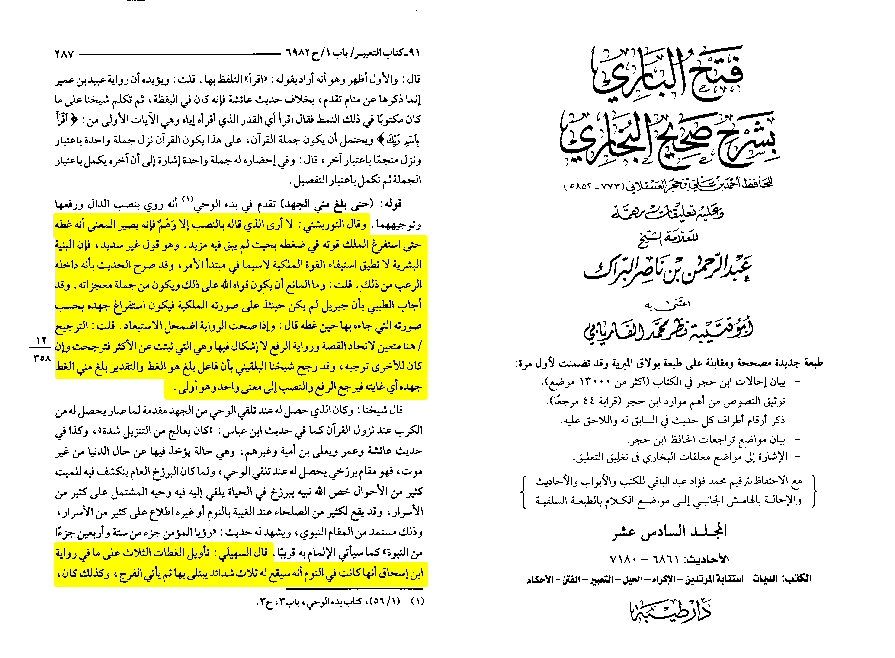

The Nasaras (christians) claim that because [in their interpretation], the prophet was “attacked/hugged”
by Gabriel it means prophet muhammed was a false prophet. They claim it is a bid’ah (innovation) that didn’t
happen to any prophet before. However this is a blatant lie although it is a fault interpretation of the
hadith, Genesis 32:22-32 describes to us Jacob wrestling God after being attacked by him, I think he is
also a false prophet now.
Ibn Ḥajar al-ʿAsqalānī (d. 852 AH) states:
« Al-Turbishi said: I don’t see what he said (angel gabriel hugging the prophet) except an illusion
from the narrator for that the meaning becomes that he covered him untill the angel established its
power on the Prophet (may Allah bless him and grant him peace) with one tight. And it is a faulty
saying because the human can’t handle the establishment of angels power without mentioning the first
encounter! … Al-Suhaili said: the interpretation of the three tightens as in the narration of ibn Isḥāq
that it was in sleep that he will have 3 trials trials that he is going to be tested with in his life until
victory comes and that is how it was for he has found a lot of damage firstly when Quraish surrounded
him the second is when they expelled them to Ethiopia and promised them with death and last when they
tried all what they with schemes as Allāh said: “And ˹remember, O Prophet,˺ when the disbelievers
conspired to capture, kill, or exile you. They planned, but Allah also planned. And Allah is the best
of planners.” For he had extreme trials in these 3 tests. »
•📓 [Fatḥ al-Bārī fī Sharḥ Ṣaḥīḥ al-Bukhārī | (16/287)]
